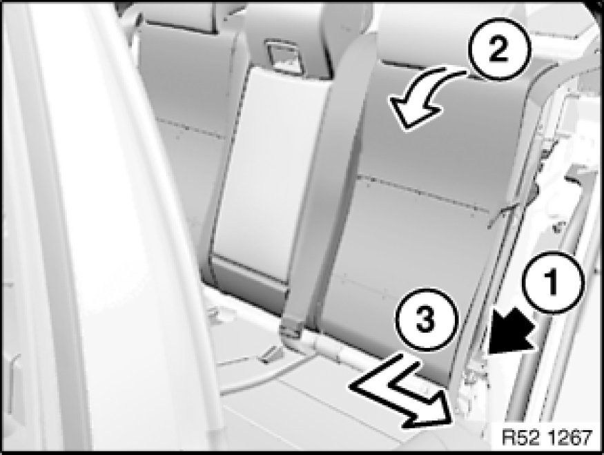
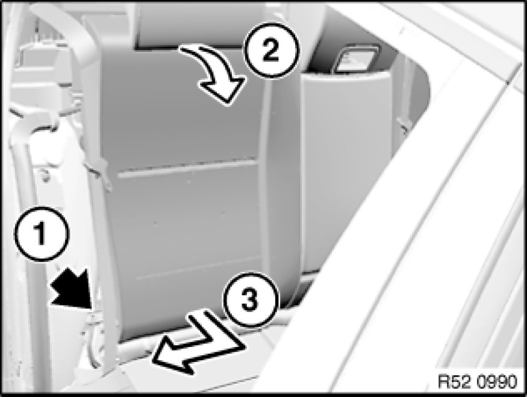

Removing and Installing/Replacing Both Backrests For Rear Seat
52 26 020 - Removing and installing/replacing both backrests for rear seat

Necessary preliminary tasks:
- Remove armrest side section Removing and Installing/Replacing Rest Side Section on Left or Right Rear Seat Backrest
- Remove rear seat Removing and Installing / Replacing Rear Seat

Note:
A 2nd person is required to help remove and install the backrest.
Both backrests must be pulled out simultaneously from the centre mount.

Left backrest:
- Release screw (1).
Tightening torque 52 26 01AZ 52 26 Rear Seats (Through-Loading System).
- Fold backrest (2) forwards
- Pull backrest forwards and outwards out of centre mount (3)

Right backrest:
- Release screw (1).
Tightening torque 52 26 01AZ 52 26 Rear Seats (Through-Loading System).
- Fold backrest (2) forwards
- Pull backrest forwards and outwards out of centre mount (3)